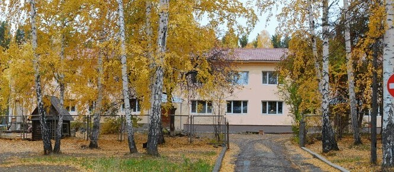

-
- / О нас / Общая информация

Детский сад №21 – это уютное и просторное заведение в центре города. В нашем детском саду заботятся о детях с 2 до 7 лет. Мы предлагаем образовательные программы, развивающие и разнообразные занятия, чтобы помочь ребенку расти и развиваться во всех направлениях.
В нашем садике есть несколько групп по возрасту, каждая из которых имеет свой индивидуальный план обучения и игровой подход. Мы уделяем особое внимание развитию речи, логическому мышлению, творческим способностям и социальной адаптации.
Наша команда профессиональных педагогов включает лицензированных специалистов в области дошкольного образования. Они заботятся о каждом ребенке, создавая комфортное и безопасное окружение для развития.
В детском саду №21 есть большой игровой двор с уличными спортивными площадками, где дети могут активно проводить время и заниматься спортом. Наши игры и занятия всегда ориентированы на индивидуальные интересы и особенности каждого малыша.
Мы открыты для новых знакомств! Приходите на экскурсию в наш детский сад и познакомьтесь с нашей командой и программами. Мы с нетерпением ждем вас и ваших детей!
В нашем детском саду мы стремимся создавать дружественную и семейную атмосферу, где дети могут чувствовать себя комфортно и безопасно. Мы регулярно организуем дополнительные мероприятия, такие как выставки рисунков, концерты, праздники, чтобы поощрять творческий потенциал и социальное взаимодействие в группе.
В нашей программе есть также занятия по некоторым дополнительным направлениям, таким как танцы, искусство, шахматы, каратэ и другие. Мы всегда готовы поддерживать и развивать таланты и интересы каждого ребенка.
Каждый день мы обеспечиваем рациональное питание, включая полезные и сбалансированные блюда. Мы также уделяем внимание гигиене и здоровью детей, регулярно проводя профилактические медицинские осмотры, что помогает нам установить связь с каждым малышом и его родителями.
Будучи частью нашего детского сада №21, ваш ребенок будет иметь возможность получить разнообразное и интересное образование, открыть для себя новые увлекательные занятия и подружиться с другими детьми. Мы с нетерпением ждем каждого ребенка и его семью!